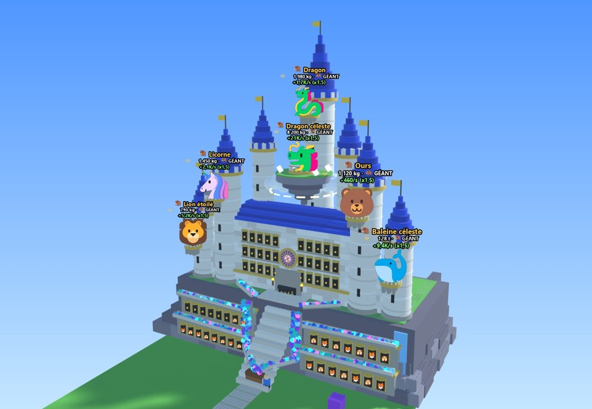
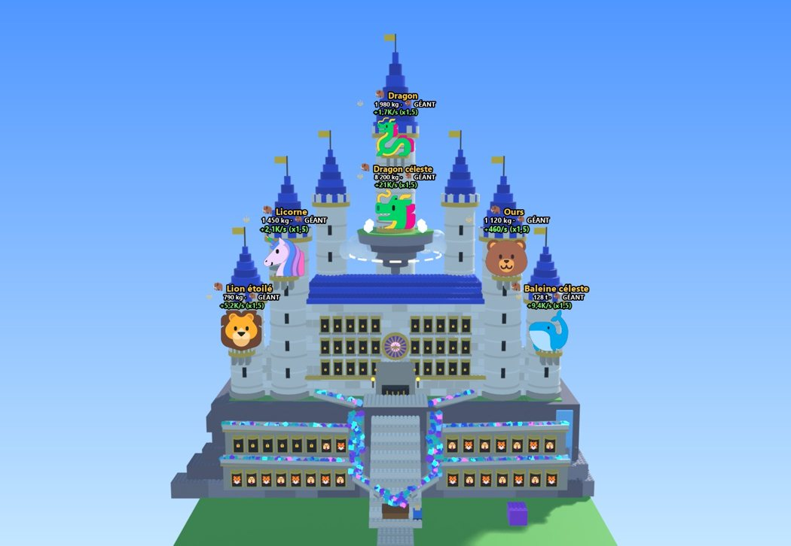
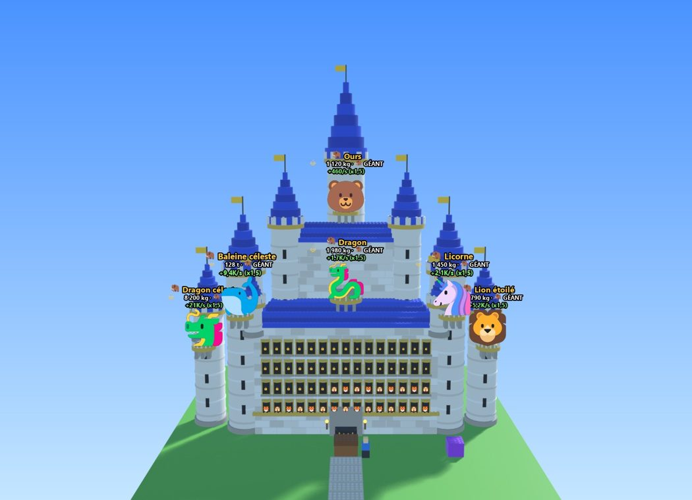
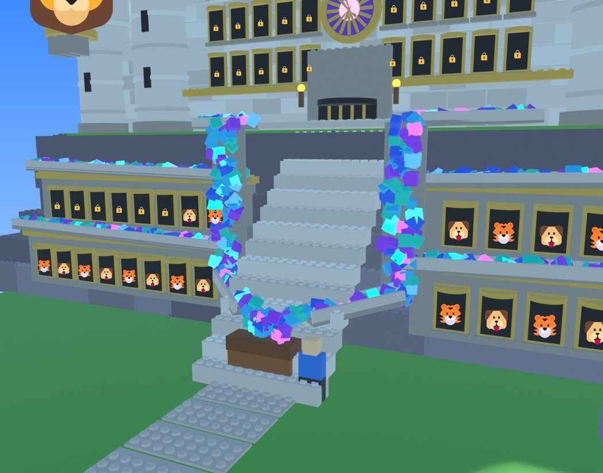

🏰 Le mélange : la falaise du style 3 + le château du style 2
Maquette en vrai 3D (pièces Roblox avec picots, soleil et ombres). Elle n'est pas encore dans le jeu. Le château complet est montré tel qu'il serait au dernier palier. Clique sur une image pour l'agrandir.

Trois-quarts, en arrivant du jardin

De face, depuis le coffre
✔ Tours collées : sur le style 2, je les avais écartées pour que chaque toit pointu se voie et que les géants ne se cachent pas. Ici, toutes les tours touchent le château :
les grandes tours aux coins du corps de logis, les petites tours extérieures reliées par un rempart crénelé, et les deux tours du haut de chaque côté de l'île flottante, devant la flèche.

Avant (style 2) : les tours extérieures sont à part
Maintenant : tout est collé et relié
Ce qu'il y a dedans
🪨 La falaise
Des blocs de roche en gradins sur les côtés, de l'herbe sur le dessus et une petite cascade à gauche.
Un grand escalier qui part du coffre et monte jusqu'à la porte.
2 galeries de 15 vitrines creusées dans la roche, juste au-dessus du coffre : ce sont tes premières places, on les voit dès le début.
🏰 Le château
Un corps de logis en pierre avec 30 vitrines, rangées en 5 + 5 sur 3 étages.
Une grande porte à herse dorée, avec des torches, un parvis en haut de l'escalier et une rosace en vitrail au-dessus.
La flèche centrale, la plus haute, avec l'île flottante devant elle.
🦣 Les géants
6 places en tout au dernier palier : 1 sur la flèche centrale, 4 sur les tours et 1 sur l'île flottante.
Plus de géant au-dessus de la porte (retiré à ta demande) : la rosace prend sa place.
Sur les tours : 2 en haut des grandes, 2 plus bas sur les petites, pour qu'ils ne se cachent pas.
☁️ L'île flottante (revenue)
La récompense du dernier palier, comme avant : roche, herbe, nuages, halo lumineux en dessous et quatre cristaux.
Elle flotte au cœur du château, entre les deux tours du haut et devant la flèche. Elle remplace l'ancien étage en pierre grise du milieu.
Le géant de la flèche est monté un peu plus haut pour rester bien visible au-dessus d'elle.
Un grand balcon au milieu pour un géant (la 6e place, au dernier palier).
💎 La cascade de gemmes (les gains qui vont au coffre)

De près : l'escalier, les deux cascades et le coffre qui déborde
Comment ça marche
Des rigoles de pierre au-dessus de chaque galerie de vitrines ramassent les gemmes des créatures et les amènent vers le milieu, en pente.
Les gemmes du château du haut descendent par deux rigoles depuis le pied du corps de logis.
De chaque côté de l'escalier, elles tombent en cascade le long de la falaise.
Une dernière glissière les verse dans le coffre, qui déborde de gemmes.
Dans le jeu
Les gemmes bougent : elles glissent dans les rigoles et tombent en continu.
Plus tu gagnes, plus le flot est fort : quelques gemmes au début, une vraie rivière avec les gros gains.
C'est seulement visuel : le coffre se remplit toujours de la même façon. L'animation est faite par chaque joueur, pour les châteaux proches seulement, en nombre limité pour les téléphones.
Avant de le construire dans le jeu :
Sur la maquette, le coffre est posé sur les premières marches. Dans le jeu, je ferai démarrer l'escalier juste derrière le coffre.
La falaise et le château vont plus loin vers l'arrière que la façade actuelle. J'agrandirai le sol de l'île de ce côté, et je vérifierai que ça ne touche pas les îles voisines.
Avec les renaissances, je te propose de montrer ensuite le château palier par palier : par exemple d'abord la falaise avec l'escalier et un petit fort en bois, puis le corps de logis, les tours, et enfin la flèche. Je te ferai ces 6 rendus pour validation.
Les couleurs sont pour l'instant celles du Château royal. Chaque palier aurait les siennes, comme avant (bois, pierre grise, blanc et or, or, céleste).
Dis-moi si ce mélange te plaît ou ce que tu veux changer, par exemple la hauteur de la falaise, le nombre de tours ou la cascade.